1과목: 폐기물 개론
1. 도시의 연간 쓰레기발생량이 14,000,000 ton 이고 수거대상 인구가 8,500,000명, 가구당 인원은 5명, 수거인부는 1일당 12,460명이 작업하며 1명의 인부가 매일 8시간씩 작업할 경우 MHT는? (단, 1년은 365일)
2. 우리나라 쓰레기 수거형태 중 효율이 가장 나쁜 것은?
3. 물렁거리는 가벼운 물질로부터 딱딱한 물질을 선별하는데 사용하며 경사진 컨베이어를 통해 폐기물을 주입시켜 천천히 회전하는 드럼위에 떨어뜨려 분류하는 것은?
4. 1일 1인당 1kg의 폐기물을 배출하고, 1가구당 3인이 살며, 총 가구수가 2821 가구일 때 1주일간 배출된 폐기물의 양(ton)은? (단, 1주일간 7일 배출함)
5. 폐기물의 수거 및 운반 시 적환장의 설치가 필요한 경우로 가장 거리가 먼 것은?
6. 액주입식 소각로의 장점이 아닌 것은?
7. 원소분석에 의한 듀롱의 발열량 계산식은?
8. 플라스틱 폐기물을 유용하게 재이용할 때 가장 적당하지 않은 이용 방법은?
9. 스크린 선별에 관한 설명으로 알맞지 않은 것은?
10. 10일 동안의 폐기물 발생량(m3/day)이 다음표와 같을 때 평균치(m3/day), 표준편차 및 분산계수(%)가 순서대로 옳은 것은?
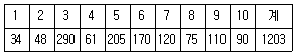
11. 발열량 계산식 중 폐기물 내 산소의 반은 H2O 형태로 나머지 반은 CO2의 형태로 전환된다고 가정하여 나타낸 식은?
12. 다음 중 지정폐기물이 아닌 것은?
13. 집배수관을 덮는 필터재료가 주변에서 유입된 미립자에 의해 막히지 않도록 하기 위한 조건으로 옳은 것은? (단, D15, D85는 입경누적 곡선에서 통과한 중량의 백분율로 15%, 85%에 상당하는 입경)
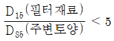
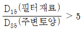
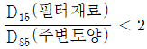
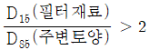
14. 전과정 평가(LCA)의 평가단계 순서로 옳은 것은?
15. 유기성 폐기물의 퇴비화에 대한 설명으로 가장 거리가 먼 것은?
16. 함수율 40%인 폐기물 1톤을 건조시켜 함수율 15%로 만들었을 때 증발된 수분량(kg)은?
17. 일반폐기물의 관리체계상 가장 먼저 분리해야 하는 폐기물은?
18. 새로운 쓰레기 수송방법이라 할 수 없는 것은?
19. 함수율(습윤중량 기준)이 a%인 도시쓰레기를 함수율이 b%(a＞b)로 감소시켜 소각시키고자 한다면 함수율 감소 후의 중량은 처음 중량의 몇 % 인가?
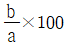
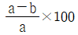
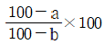
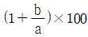
20. 폐기물의 발생원 선별 시 일반적인 고려사항으로 가장 거리가 먼 것은?
2과목: 폐기물 처리 기술
21. 유기성 폐기물의 생물학적 처리 시 화학 종속영양계 미생물의 에너지원과 탄소원을 옳게 나열한 것은?
22. 중금속의 토양오염원이 아닌 것은?
23. 희석분뇨의 유량 1,000 m3/day, 유입 BOD 250mg/L, BOD제거율 65%일 때, Lagoon의 표면적(m2)은? (단, Lagoon의 수심 5m, 산화속도 K1=0.53 이다.)
24. 다음 중 유동층 소각로의 특징이 아닌 것은?
25. 매립년한이 10년 이상 경과된 침출수의 특성에 대한 설명으로 옳은 것은?
26. 폐기물 매립지의 4단계 분해과정에 대한 설명으로 옳지 않은 것은?
27. 퇴비화에 적합한 초기 탄질(C/N)비는 30내외이다. 탄질비가 15인 음식물쓰레기를 초기 퇴비화조건으로 조정하고자 할 때 가장 효과적인 물질은? (단, 혼합비율은 무게비율로 1:1 이다.)
28. 매립지에서 사용하는 열가소성(thermoplastic) 합성차수막이 아닌 것은?
29. 유해성 폐기물을 대상으로 침전, 이온교환기술을 적용하기 가장 어려운 것은?
30. 다음은 음식물쓰레기의 혐기성소화에 있어서 메탄발효조의 효과적인 운전조건과 거리가 먼 것은?
31. 매립지 바닥 차수막으로서 양이온 교환능 10meq/100g 인 점토를 비중 2로 조성하였다면, 점토 차수막물질 1m3에 교환 흡수될 수 있는 Ca2+ 이온의 질량(g)은? (단, 원자량 : Ca = 40 g/mol)
32. 함수율 97%의 슬러지를 농축하였더니 부피가 처음부피의 1/3로 줄어들었을 때 농축슬러지의 함수율(%)은? (단, 비중은 함수율과 관계없이 1.0으로 동일하다.)
33. 호기성 퇴비화에 대한 설명으로 옳지 않은 것은?
34. 어느 쓰레기 수거차의 적재능력은 15m3 또는 10톤을 적재할 수 있다. 밀도가 0.6 ton/m3인 폐기물 3000m3을 동시에 수거하려 할 때, 필요한 수거차의 대수는? (단, 기타 사항은 고려하지 않음)
35. 혐기성소화에 의한 유기물의 분해단계를 옳게 나타낸 것은?
36. 호기성 퇴비화공정의 설계 시 운영고려 인자에 관한 설명으로 적합하지 않은 것은?
37. 도시가정 쓰레기의 매립 시 유출되는 침출수의 정화시설 운전에 주의할 사항이 아닌 것은?
38. 폐기물 매립지에 소요되는 연직차수막과 표면차수막의 비교설명으로 옳지 않은 것은?
39. 소각처리에 가장 부적합한 폐기물은?
40. 해안매립공법인 순차투입방법에 대한 설명으로 옳은 것은?
3과목: 폐기물 소각 및 열회수
41. 유동층을 이용한 슬러지(sludge)의 소각특성에 대한 다음 설명 중 틀린 것은?
42. 슬러지를 유동층 소각로에서 소각시키는 경우와 다단로에서 소각시키는 경우의 차이에 대한 설명으로 옳지 않은 것은?
43. 어떤 폐기물의 원소조성이 다음과 같을 때 연소 시 필요한 이론공기량(kg/kg)은? (단, 중량기준, 표준상태기준으로 계산)
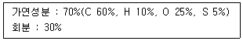
44. 소각로의 열효율을 향상시키기 위한 대책이라 할 수 없는 것은?
45. 다음 중 일반적으로 사용되는 열분해장치의 종류와 거리가 먼 것은?
46. 백 필터(bag filter) 재질과 최고 운전 온도가 옳게 연결 된 것은?
47. 다음 성분의 중유의 연소의 필요한 이론공기량(Sm3/kg)은?
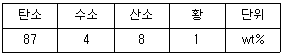
48. 쓰레기를 소각 후 남은 재의 중량은 소각 전 쓰레기중량의 1/4이다. 쓰레기 30ton을 소각하였을 때 재의 용량이 4m3라면 재의 밀도(ton/m3)는?
49. 연소의 특성을 설명한 내용으로 알맞지 않는 것은?
50. 소각 시 강열감량에 관한 내용으로 가장 거리가 먼 것은?
51. 플라스틱을 열분해에 의하여 처리하고자 한다. 열분해 온도가 적절치 못한 것은?
52. 기체연료인 메탄(CH4)의 고위발열량이 9500kcal/Sm3이라면 저위발열량(kcal/Sm3)은?
53. 이론공기량(A0)과 이론연소가스량(G0)은 연료 종류에 따라 특유한 값을 취하며, 연료 중의 탄소분은 저위발열량에 대략 비례한다고 나타낸 식은?
54. 폐열회수를 위한 열교환기 중 공기예열기에 관한 설명으로 옳지 않은 것은?
55. 질량분률이 H : 12.0%, S : 1.4%, O : 1.6%, C : 85%, 수분 2%인 중유 1kg을 연소시킬 때 연소효율이 80%라면 저위발열량(kcal/kg)은? (단, 각 원소의 단위질량당 열량은 C 8100, H : 34000, S : 2500 kcal/kg 이다.)
56. 열분해 장치의 방식 중 주입폐기물의 입자가 작아야 하고 주입량이 크지 못한 단점과 어떤 종류의 폐기물도 처리가 가능한 장점을 가지는 것으로 가장 적절한 것은?
57. 열분해방법 중 산소 흡입 고온 열분해법의 특징에 대한 설명으로 가장 거리가 먼 것은?
58. 연소실의 운전척도를 나타내는 것이 아닌 것은?
59. 어떤 소각로에서 배출되는 가스량은 8000 kg/hr이고 온도는 1000℃(1기압 기준)이다. 배기가스는 소각로 내에서 2초간 체류한다면 소각로 용적(m3)은? (단, 표준상태에서 배기가스 밀도 = 0.2 kg/m3)
60. 소각로에서 소요되는 과잉 공기량이 지나치게 클 경우 나타나는 현상이 아닌 것은?
4과목: 폐기물 공정시험기준(방법)
61. 폐기물의 강열감량 및 유기물 함량을 중량법으로 시험 시 시료를 탄화시키기 위해 사용하는 용액은?
62. 자외선/가기선 분광광도계 광원부의 광원 중 자외부의 광원으로 주로 사용되는 것은?
63. 폐기물이 1톤 미만으로 야적되어 있는 적환장에서 채취하여야 할 최소 시료의 총량(g)은? (단, 소각재는 아님)
64. 고상 폐기물의 pH(유리전극법)를 측정하기 위한 실험절차로 ( )에 내용으로 옳은 것은?
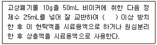
65. 0.1N NaOH용액 10mL를 중화하는데 어떤 농도의 HCl 용액이 100mL 소요되었다. 이 HCl 용액의 pH는?
66. 분석용 저울은 최소 몇 mg까지 달 수 있는 것이어야 하는가? (단, 총칙 기준)
67. 시료의 채취방법에 관한 내용으로 ( )에 옳은 것은?
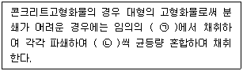
68. 시안-이온전극법에 관한 내용으로 ( )에 옳은 내용은?
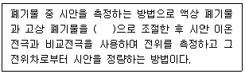
69. 폐기물에 함유된 오염물질을 분석하기 위한 용출시험 방법 중 시료 용액의 조제에 관한 설명으로 ( )에 알맞은 것은?
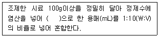
70. 자외선/가시선 분광법에 의한 시안분석방법에 관한 설명으로 틀린 것은?
71. 할로겐화 유기물질(기체크로마토그래피-질량분석법) 측정 시 간섭물질에 관한 설명으로 틀린 것은?
72. 원자흡수분광광도법에 의하여 크롬을 분석하는 경우 적합한 가연성 가스는?
73. 자외선/가시선 분광법을 이용한 카드뮴 측정에 관한 설명으로 ( )에 옳은 내용은?
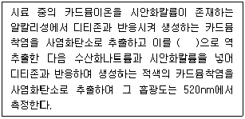
74. 원자흡수분광광도법의 분석장치를 나열한 것으로 적당하지 않은 것은?
75. 유기질소 화합물 및 유기인을 기체크로마토그래피로 분석할 경우 사용되는 검출기는?
76. 폐기물공정시험기준에서 규정하고 있는 대상폐기물의 양과 시료의 최소 수가 잘못 연결된 것은?
77. K2Cr2O7을 사용하여 1000mg/L의 Cr표준원액 100mL를 제조하려면 필요한 K2Cr2O7의 양(mg)은? (단, 원자량 K = 39, Cr = 52, O = 16)
78. 폐기물 용출조작에 관한 내용으로 ( )에 옳은 것은?
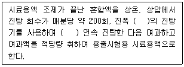
79. 폐기물 중 크롬을 자외선/가시선 분광법으로 측정하는 방법에 대한 내용으로 틀린 것은?
80. 정량한계(LOQ)에 관한 설명으로 ( )에 내용으로 옳은 것은?
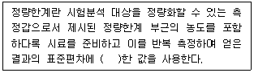
5과목: 폐기물 관계 법규
81. 의료폐기물의 수집·운반 차량의 차체는 어떤색으로 색칠하여야 하는가?
82. 과징금으로 징수한 금액의 사용 용도로 알맞지 않은 것은?
83. 폐기물처리시설(소각시설, 소각열회수시설이나 멸균분쇄시설)의 검사를 받으려는 자가 해당 검사기관에 검사신청서와 함께 첨부하여 제출하여야 하는 서류와 가장 거리가 먼 것은?
84. 대통령령으로 정하는 폐기물처리시설을 설치, 운영하는 자는 그 처리시설에서 배출되는 오염물질을 측정하거나 환경부령으로 정하는 측정기관으로 하여금 측정하게 하고, 그 결과를 환경부 장관에게 보고하여야 한다. 다음 중 환경부령으로 정하는 측정기관과 가장 거리가 먼 것은?
85. 폐기물처리업자나 폐기물처리 신고자가 휴업, 폐업 또는 재개업을 한 경우에 휴업, 폐업 또는 재개업을 한 날부터 몇 일 이내에 신고서(서류 첨부)를 시·도지사나 지방환경관서의 장에게 제출하여야 하는가?
86. 폐기물 처리시설의 유지·관리에 과한 기술관리를 대행할 수 있는 자는?
87. 기술관리인을 두어야 할 폐기물처리시설이 아닌 것은?
88. 다음 중 사업장폐기물에 해당되지 않는 것은?
89. 폐기물처리시설을 설치하고자 하는 자가 제출하여야 하는 폐기물처분시설 설치승인 신청서에 첨부되는 서류로 틀린 것은?
90. 다음 용어의 정의로 틀린 것은?
91. 다음 중 5년 이하의 징역이나 5천만원 이하의 벌금에 처하는 경우가 아닌 것은?
92. 지정폐기물 중 부식성폐기물(폐알칼리) 기준으로 옳은 것은?
93. '대통령령으로 정하는 폐기물처리시설'을 설치·운영하는 자는 그 폐기물 처리시설의 설치·운영이 주변지역에 미치는 영향을 3년마다 조사하여 그 결과를 환경부 장관에게 제출하여야 한다. 다음 중 대통령령으로 정하는 폐기물처리시설 기준으로 틀린 것은?
94. 폐기물 중간처분업자가 폐기물처리업의 변경허가를 받아야 할 중요사항으로 틀린 것은?
95. 폐기물 재활용을 금지하거나 제한하는 항목 기준으로 옳지 않은 것은?
96. 폐기물관리법에서 사용하는 용어의 정의로 틀린 것은?
97. 폐기물관리법을 적용하지 아니하는 물질에 대한 내용으로 옳지 않은 것은?
98. 방치폐기물의 처리를 폐기물처리 공제조합에 명할 수 있는 방치폐기물 처리량 기준으로 ( )에 옳은 것은?(오류 신고가 접수된 문제입니다. 반드시 정답과 해설을 확인하시기 바랍니다.)
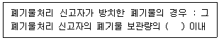
99. 국가 차원의 환경보전을 위한 종합계획인 국가환경종합계획의 수립 주기는?
100. 생활폐기물 처리대행자(대통령령이 정하는 자)에 대한 기준으로 틀린 것은?